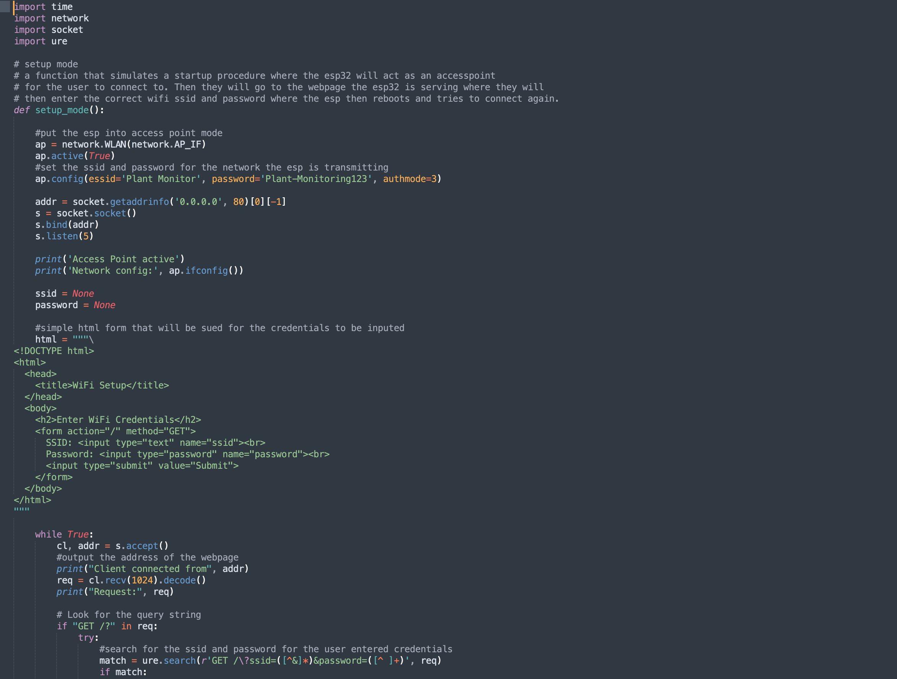

Github Link
This project was a programmed by a team of friends in my CS410 class. That was our intro to software engineering class which was
the capstone course for CS majors. I was the project manager for this group, I also worked on the backend mainly with the ESP32
and integrating the sensors along with helping create the API.
The class projects where mainly centered around full stack IOT devices, me and my friends picked plant monitoring since we have
talked about potentially creating a full scale aeroponics systems, but that fell through the cracks. To get this started we split
the groups into myself being the PM and Backend with hardware focus, my friend handled the main frontend API integration, and the
other two members worked on the frontend site in react.
For a language I mainly used python for backend since time and space where not our main concerns in this context rather getting good code
that could simulate the features you would see in an at home IOT device. One of the main features I pushed and strived for was a setup
procedure that would mimic what would happen if you got a smart home device and had to set it up with your home network.
To do this conceptually was easy:
Have saved wifi credentials in some text or env file.
Read the credentials and attempt to connect to the network
If connection fails serve a webpage the ESP32 goes into Access Point(AP) mode
Here the user connects to the wifi that is served from the ESP and goes to the webpage the ESP is serving
Put your correct wifi credentials into the form and submit
The ESP attempts to connect with the new creds and either succeeds or it will repeat the process
The implementation of the form was not the most difficult part since I have experience wtih html forms and submissions, but
o implement this logically in the code was somewhat difficult and long for the other aspects of the setup procedure. Since I
had to perform so many checks and make sure the ESP was importing the correct modules to server the webpage and go into access
point mode. Below is what the code looked like for setting up the webpage, it was a real learning curve using socket as well as
implementing some REGEX for the form to ensure a valid format for a password is taken.
